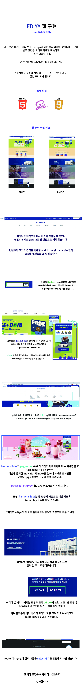
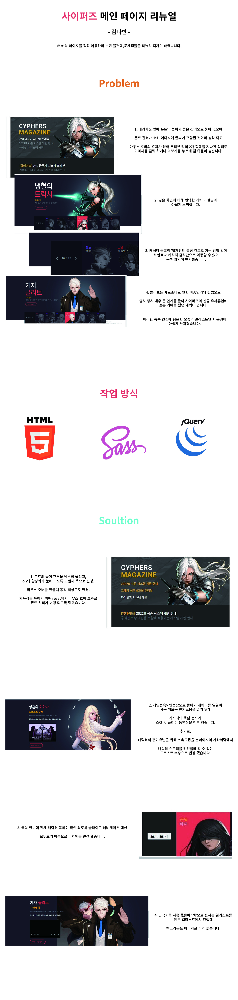

- Name : 김다빈
- Birth : 1998.09.10
- Address : 서울시 양천구 신정동
- Phone : 010-5178-0377
- Email : suor1058@naver.com
로딩중
Kim Da Bin
CREATIVE PUBLISHER
무한한 성장 가능성을 지닌 웹퍼블리셔 김다빈 입니다.
새로운 것에 도전 하는걸 좋아하고 시멘틱한 웹사이트 구축을 위해
항상 노력하고 있으며 작업 전의 사전 준비를 게을리 하지 않습니다.
스크롤바를 내리면 작품을 감상할 수 있습니다.
ABOUT ME
VISION
도전을 두려워 하지 않고 지속적으로 배우며 끊임없이 성장하는 퍼블리셔가 되겠습니다.
HTML과 CSS, 자바 스크립트의 숙련도를 현재보다 월등히 높여 나만의 기술을 개발하고 확장 하는것이 목표입니다.
컴퓨터를 활용하는 직업이 적성에 맞을 것 같아 웹과 관련된 직업을 찾던중 퍼블리셔에 흥미를 갖게 되었습니다.
자유로운 근무 환경을 선호하고 새로운 시도를 좋아하는 저에게 다양한 프로젝트에 참여할 수 있는 웹 퍼블리셔가 매력적으로 느껴졌습니다.
팀원들과 협력하며 웹 퀄리티를 최고로 끌어 올리는 퍼블리셔가 되겠습니다.
WHAT CAN I DO?
문법을 지키면서 최대한 복잡하지 않게 시멘틱한 페이지를 제작 하고자 노력하고 있습니다.
HTML5 & CSS3 시멘틱 페이지를 ZenCoding(EMMET), SCSS로 코딩할 수 있습니다.
클라이언트의 요구사항을 적극적으로 반영하고 구현할 수 있는 장점이 있습니다.
JS 플러그인을 사용에 그치지 않고 필요한 기능을 직접 구현할 수 있는 Javascript/jQuery 로직구현과
리액트 라이브러리를 활용한 퍼블리싱이 가능합니다.
- ZenCoding(EMMET) & SCSS
- Javascript & jQuery 로직구현
- MVC 패턴의 페이지 구성
- RWD 반응형 웹디자인
- HTML5 DTD 유효성 검사 통과
- 웹접근성을 향상시킨 시멘틱 페이지
WORK STYLE
- 구조와 디자인, 기능을 분리한 MVC패턴을 구현
- 자바스크립트와 jQuery / React를 구현
- HTML5 시멘틱과 CSS3 웹페이지를 구현
다른 사람이 말하는 나
-
지우
굉장히 신중한 친구노는것을 좋아하고 장난을 잘 치는데 어떠한 일을 할때 굉장히 신중하다. 진지할때는 진지하고, 책임감이 높다.
-
진옥
이성적이고 현실적인 친구감정적이지 않고 이성적이며, 상상의 나래를 펼치지 않는 현실적인 성향이다. 그리고, 꼼꼼한 면이 있다.
-
하늘
마이웨이, 호불호 확실한 친구주변 사람에게 휘둘리지 않고 나만의 길을 감. 보기 드문 호불호가 매우 뚜렷한 성격.
SKILL
탁월한 UX분석능력과 Emmet/Zencoding 활용
-
UX/UI 디자인
사용자의 Context와 Needs를 파악하고
Problem을 해결할 수 있는 Insight 도출 -
반응형 웹표준
시멘틱을 지향하는 HTML/CSS 작성능력 보유,
자바스크립트와 제이쿼리 기반의 로직 구현 가능
SASS 전처리기와 리액트 라이브러리 활용
-
Sass Preprocessor
협업 웹코딩의 필수 기술인 SCSS를 이용한
CSS 스타일링을 원활이 사용할 수 있습니다. -
리액트 라이브러리
국내 프론트엔드 시장의 대세 리액트 코드구현,
자바스크립트와 제이쿼리 기반의 로직구현 가능
ABILITY
젠코딩
HTML5
CSS
jQuery
웹기획
디자인
95%
리더쉽
적극성
창조성
사교성
책임감
정직성
UX DESIGN
작품리스트
이전 다음내가 생각하는 사용자경험 - User Experience
UX의 정의에 대해서 알아보며 실패 혹은 성공적이라 불리는 UX라 불리는 사례들을 봤을때
사용자 경험을 바탕으로 어떤 제품이나 서비스를 구축하는 것의 중요성을 깨달았습니다.
내가 생각하는 UX란, 사용자의 '불편함' 을 찾아내고 '편리함'으로 바꿔주는 해결책을 찾아내
사용자의 일상에 새로운 경험을 녹아들도록 개발하는 것이란 생각이 듭니다.
스마트폰 보조 배터리
디자인과 UX의 차이
- 1. 와인 코르크 마개
-
와인의 코르크 마개를 작은 다육식물
화분으로 업사이클링(Upcycling)한 사례


- 2. 물티슈 보호 캡
-
오염, 수분증발을 방지하는 물티슈 보호
캡을 콘센트 보호 덮개로 활용한 사례


PORTFOLIO
이디야
EDIYA Renewal Design
기존 웹사이트의 메인 페이지를 실무에서 배운 내용을 토대로 구현 하였습니다.
padding 활용 최대화, position:absoult를 최소화한 배치를 하도록 노력 했습니다.
작업프로그램 : Visual Studio Code
작업기여도 : 100% 개인 작업

하나은행 (리뉴얼 디자인)
HANA Renewal Design
기존 웹사이트의 개선사항을 찾고 메인페이지를 리뉴얼 디자인하였습니다.
하나은행의 아이덴티티 컬러를 사용하여 브랜드 이미지를 강조하였으며,
슬라이드, all메뉴 닫기 버튼등의 기능적 불편 사항에 대해 리뉴얼 하였습니다.
작업프로그램 : Visual Studio Code
작업기여도 : 100% 개인 작업

사이퍼즈 (리뉴얼 디자인, 반응형)
Cyphers Renewal Design
사이퍼즈의 메인 페이지를 접속하는 유저의 입장으로 리뉴얼 디자인하였습니다.
가독성을 높이고 넓은 빈 공간을 활용해 빠른 캐릭터 스킬 확인과
본 사이트에는 구현되지 않은 모바일 반응형 웹 구축을 하였습니다.
작업프로그램 : Visual Studio Code
작업기여도 : 100% 개인 작업


뉴욕 여행(추천여행지) 사이트 디자인
DANYAGN TRAVEL Site Design
4가지 카테고리로 나누어 뉴욕의 대표적인 문화를 소개하는 원페이지
형식의 사이트를 제작하였습니다.
작업프로그램 : Visual Studio Code
작업기여도 : 100% 개인 작업

필요한 기능을 직접 javascript/jquery 로직 구현
"믿고 맡길 수 있는 전문가" 로 성장하는 인재가 되기 위해 노력을 게을리 하지 않고 있습니다.
HTML5 & CSS3 시멘틱 페이지를 SCSS, ZenCoding(EMMET)으로 작성할 수 있습니다.
클라이언트의 요구사항을 적극적으로 반영하는 UI/UX 디자인 능력은 저의 최고의 장점중 하나입니다.
JS 플러그인을 사용에 그치지 않고 필요한 기능을 직접 구현할 수 있는 Javascript/jQuery 로직구현이 가능합니다.
for문과 다중 if문의 결합한 로직 구현
SASS, Emmet 활용
페이지 전체의 계층구조를 입체적으로 분석할 수 있는
실무형 코딩기법 Emmet을 사용할 수 있어 업무시간을 단축시킬 수 있을뿐 아니라,
유지보수도 더욱 쉽고 정확하게 처리할 수 있습니다.
SCSS의 가장 큰 장점인 변수와 Mixin 기능을 적극 활용하여
CSS 스타일링을 할 수 있습니다.
Sprite-Image와 IR(Image Replacement)기법에 능숙
id, class를 남발하지 않고 원하는 요소를 셀렉팅할 수 있는 능력,
CSS3 Transform, Transition, Keyframes을 이용한 애니메이션 효과 구현
직접 구현한 슬라이드
-
좌우이동 슬라이드
슬라이드 구현에 적합한 ul,li,a 태그와 flxe를 사용하여 UI를 구현하였습니다.
슬라이드 보기
또한 자바스크립트로 position의 lef값을 동적으로 변화시켜 이동하도록 하였습니다. 플러그인 없이 직접 구현하였습니다. -
무한 슬라이드
이전, 다음 기능을 가진 업그레이드 된 슬라이드로서 사용자 편의성을 향상되었습니다. append() API와 콜백함수의 개념을 접목하여 구현하였습니다. 플러그인 없이 직접 구현하였습니다.
슬라이드 보기 -
자동실행 슬라이드
시작, 정지기능이 장착된 슬라이드로서 window load시 일관성있게 한쪽 방향에서 다음 슬라이드가 노출되는 기능을 trigger()를 활용해 구현하였습니다. 플러그인 없이 직접 구현하였습니다.
슬라이드 보기
코딩 프로젝트

디자인 포트폴리오
CONTACT
귀사에 입사를 지원합니다.
저의 웹퍼블리싱 이야기 입니다.
질문을 선택하시면 정리된 답변을 보실수 있습니다.
- 1. html5의 가장 큰 특징은 무엇일까요? 화살표
-
특정 디바이스에 구애받지 않는 웹표준의 확장이 가장 큰 특징이라고 생각 합니다.
- 2. 웹표준, 웹접근성, 시멘틱웹에 대해 설명해 주세요. 화살표
-
웹표준: 웹에서 표준적으로 사용되는 기술이나 규칙을 뜻합니다.
웹접근성: 모든 사용자가 신체적, 환경적 조건에 제약받지 않고 웹을 이용할 수 있도록 보장하는것 입니다.
시멘틱 웹: 의미가 있는 태그들을 사용하여 웹 접근성과 검색엔진의 기능을 향상 시키고 컴퓨터가 정보를 읽을 수 있게 만든 웹 입니다. - 3. 자바스크립트 라이브러리 사용시 가장 큰 장점은? 화살표
-
바닐라 자바 스크립트보다 쉬운 난이도로 사용할 수 있습니다.
- 4. .setInterval() 함수에 대해 설명하시오. 화살표
-
정해진 시간마다 특정 함수를 반복 실행하는 함수 입니다.
- 5. CSS 미디어쿼리는 어떤 역할을 수행하는지 답하시오. 화살표
-
사용자의 디스플레이에 맞게 웹 크기가 조정되는 역할을 수행 합니다.
더욱 궁금하신 점은 면접시 말씀드리겠습니다. 감사합니다!
본 페이지는 저의 개인 포트폴리오용으로 제작되었으며, 상업적인 목적과 관련이 없음을 알려드립니다.